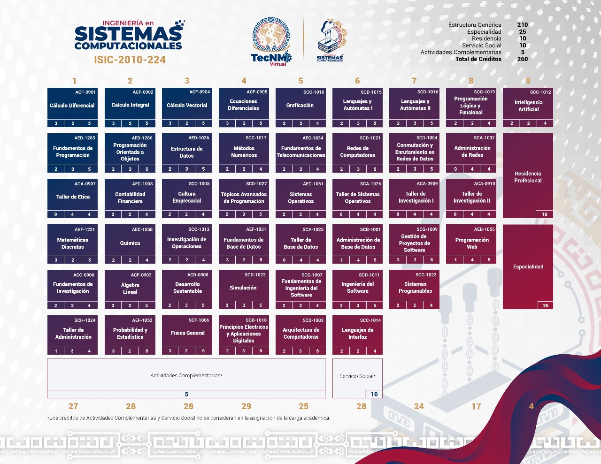

Retículas y Plan de Estudios

Estructura del Programa Educativo
La retícula de Ingeniería en Sistemas Computacionales (clave ISIC-2010-224) está integrada por un total de 260 créditos distribuidos a lo largo del plan de estudios. Cubre áreas clave como desarrollo de software, arquitectura de computadoras, redes de datos, bases de datos y especializaciones orientadas a las nuevas tecnologías.
Puntos clave del plan de estudios
- Estructura crediticia: 210 créditos genéricos, 25 de especialidad, 10 de residencia profesional, 10 de servicio social y 5 de actividades complementarias.
- Áreas de formación: Ciencias básicas, programación, ingeniería de software, redes de comunicación e inteligencia artificial.
- Vinculación profesional: Integración de especialidad y residencia profesional en los semestres finales para la inserción laboral.